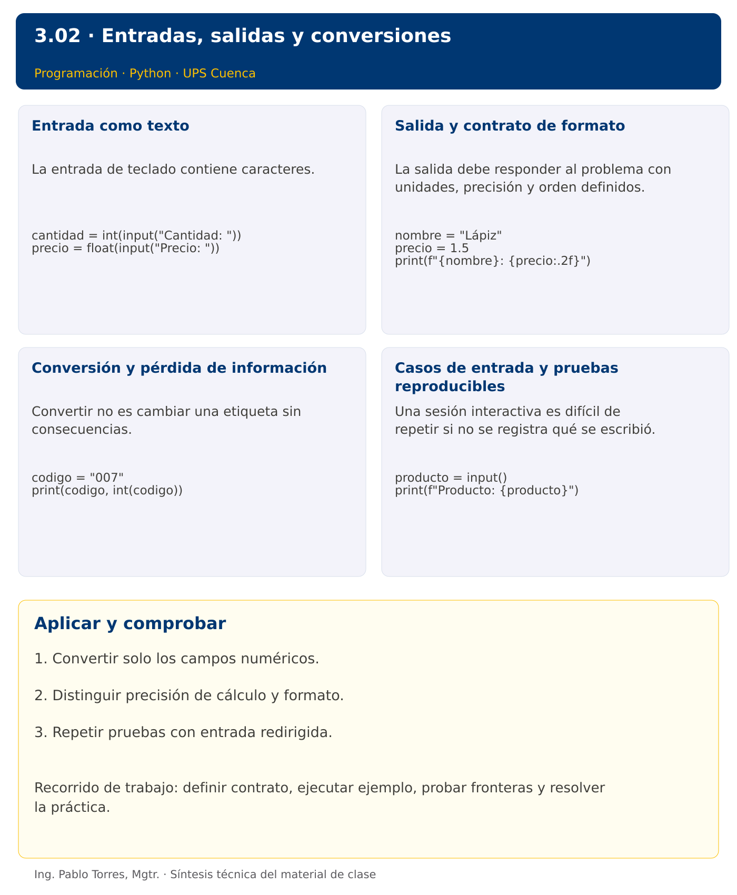

Programación

3.02 · Entradas, salidas y conversiones · Java
Autor: Ing. Pablo Torres, Mgtr.
Unidad 3: Lenguaje de Programación
Índice del curso · Versión Python · Presentación Python · Anterior · Siguiente
Conceptos · Demostración · Práctica de clase · Lo esencial
Contexto. Generar un recibo a partir del nombre de un producto, su cantidad y su precio. Separar el texto ingresado del valor numérico que el cálculo requiere y especificar el formato exacto de la salida.
Prerrequisitos. Variables, tipos numéricos y operaciones.
Versión complementaria. Estudiar el mismo problema y los mismos casos de Python mediante construcciones idiomáticas de Java. La presentación compartida corresponde a Python.
1. Conceptos y ejemplos
1.1. Entrada como texto
La entrada de teclado contiene caracteres. Antes de operar, determinar qué campos son texto y cuáles deben convertirse. Conservar códigos y teléfonos como cadenas si no representan cantidades. Definir el separador decimal y el dominio de cada campo. En esta sección el contrato exige texto numérico válido; la recuperación de entradas inválidas se implementará después de estudiar decisiones.
Aplicar en Java. Usar Scanner y nextLine para leer una línea completa. Convertir con Integer.parseInt o Double.parseDouble. Esta estrategia evita el salto de línea pendiente al alternar nextInt con nextLine. Los textos no numéricos producen NumberFormatException.
Scanner entrada = new Scanner(System.in);
int cantidad = Integer.parseInt(entrada.nextLine());
double precio = Double.parseDouble(entrada.nextLine());
1.2. Salida y contrato de formato
La salida debe responder al problema con unidades, precisión y orden definidos. Separar mensajes de interacción de datos utilizados por una prueba automática. Acordar si se permiten espacios extra. Mostrar dos decimales mejora una presentación, pero no modifica el valor numérico almacenado ni corrige errores de precisión.
Aplicar en Java. System.out.println agrega un salto de línea. printf permite especificadores como %s, %d y %.2f. Usar Locale.ROOT para que las pruebas utilicen punto decimal con independencia de la configuración local. %n representa el salto de línea de la plataforma.
System.out.printf(Locale.ROOT, "%s: %.2f%n", "Lápiz", 1.5);
1.3. Conversión y pérdida de información
Convertir no es cambiar una etiqueta sin consecuencias. El texto "007" convertido a entero pierde los ceros de presentación. Un número real convertido a entero pierde su parte fraccionaria. Distinguir transformación necesaria para calcular de transformación necesaria para mostrar. Guardar datos originales cuando el contrato exija conservar su representación.
Aplicar en Java. String.valueOf convierte valores a texto. Un cast a int de un double finito dentro de rango elimina la fracción hacia cero. Boolean.parseBoolean solo reconoce true sin distinguir mayúsculas; no interpreta “sí”. Diseñar un validador explícito cuando corresponda.
String codigo = "007";
System.out.println(codigo + " " + Integer.parseInt(codigo));
1.4. Casos de entrada y pruebas reproducibles
Una sesión interactiva es difícil de repetir si no se registra qué se escribió. Guardar un archivo de entrada con un dato por línea permite ejecutar la misma prueba varias veces. Calcular la salida esperada de forma independiente y compararla completa. Registrar también el comportamiento de un dato inválido como diagnóstico, sin afirmar que ya existe un manejo amigable del error.
Aplicar en Java. Compilar con javac Demo.java y ejecutar java Demo < entrada.txt. Mantener el mismo orden de campos que Python. Scanner utiliza la entrada estándar, que puede venir del teclado o de un archivo redirigido.
String producto = entrada.nextLine();
System.out.println("Producto: " + producto);
Los bloques breves anteriores ilustran una operación y pueden requerir variables o imports del contexto. Utilizar la demostración siguiente como programa completo.
Síntesis visual

2. Demostración guiada
Problema. Leer producto, cantidad y precio, y producir el total de una compra.
Contrato de esta demostración. Leer tres líneas: texto de producto, cantidad entera no negativa y precio decimal no negativo con punto. Exigir formato numérico válido. Mostrar nombre e importe con dos decimales. Una entrada de formato inválido produce el error de conversión del lenguaje; aún no se recupera.
Fuente: ejemplos/Demo.java.
import java.util.Locale;
import java.util.Scanner;
public class Demo {
public static void main(String[] args) {
Scanner entrada = new Scanner(System.in);
String producto = entrada.nextLine();
int cantidad = Integer.parseInt(entrada.nextLine());
double precio = Double.parseDouble(entrada.nextLine());
System.out.println("Producto: " + producto);
System.out.printf(Locale.ROOT, "Total: %.2f%n", cantidad * precio);
}
}
Ejecutar
Abrir una terminal dentro de 03/3.02-entradas-salidas/java/ejemplos/ y ejecutar:
javac -encoding UTF-8 -d build *.java
java -cp build Demo < entrada.txt
Contenido de entrada.txt:
Cuaderno
4
1.75
Salida esperada
Producto: Cuaderno
Total: 7.00
Interpretación. Seguir las asignaciones y los bloques en orden, identificar qué instrucción produce cada línea y contrastar con el contrato. Modificar un dato por vez y anticipar el resultado antes de ejecutar. La salida de referencia es una expectativa; el registro de verificaciones indica qué ejecuciones se realizaron.
Ejercicios prácticos progresivos
Resolver los siguientes ejercicios en orden. Entregar enunciado, fuente y resultado propio. Los casos mostrados permiten comprobar el contrato y no sustituyen una prueba adicional de frontera.
Adaptar los mismos datos y resultados a Java. Usar record para registros y bibliotecas estándar para archivos y procesos. Para resultados booleanos, aceptar true/false en Java frente a True/False en Python. Los ejercicios que inspeccionan el intérprete deben inspeccionar la JVM y el JDK equivalentes.
Ejercicio 01. Saludo
Leer un nombre y mostrar “Hola, Ana” para la entrada Ana. Conservar los espacios interiores del nombre.
Caso de comprobación:
Hola, Ana
Ejercicio 02. Suma de enteros
Leer dos enteros, uno por línea. Para 12 y 8 mostrar su suma.
Caso de comprobación:
20
Ejercicio 03. Nombre y edad
Leer nombre y edad. Para Luis y 19 mostrar “Luis: 19 años”. Convertir edad a entero.
Caso de comprobación:
Luis: 19 años
Ejercicio 04. Área de triángulo
Leer base y altura positivas. Para 10.5 y 4 mostrar área con dos decimales.
Caso de comprobación:
21.00
Ejercicio 05. Temperatura
Leer grados Celsius y convertir a Fahrenheit. Para 25 mostrar 77.0.
Caso de comprobación:
77.0
Ejercicio 06. Identificador
Leer código 007 y cantidad 3. Conservar los ceros del código y mostrar “007: 3”.
Caso de comprobación:
007: 3
Ejercicio 07. Cociente decimal
Leer dividendo 7 y divisor 2, con divisor distinto de cero como precondición. Mostrar el cociente con tres decimales.
Caso de comprobación:
3.500
Ejercicio 08. Promedio de mediciones
Leer tres decimales 8.5, 7.8 y 9.2. Mostrar promedio con dos decimales.
Caso de comprobación:
8.50
Ejercicio 09. Total de servicio
Leer horas 3.5, tarifa 8 y recargo porcentual 10. Calcular base, recargo y total, cada uno con dos decimales.
Caso de comprobación:
28.00 2.80 30.80
Ejercicio 10. Factura de dos productos
Leer nombre, cantidad y precio de dos productos. Para A, 2, 3.5 y B, 3, 2 mostrar un subtotal por línea y luego el total. No usar ciclos todavía.
Caso de comprobación:
A: 7.00
B: 6.00
Total: 13.00
3. PC3.02 · Práctica de clase
Leer nombre de un servicio, cantidad de horas y tarifa por hora. Calcular subtotal, descuento porcentual y total. Solicitar el descuento como cuarto dato numérico. Definir horas y tarifa no negativas y descuento entre 0 y 100 como precondiciones. Mostrar importes con dos decimales. Documentar el error obtenido al ingresar texto donde se requiere un número, sin añadir todavía recuperación mediante excepciones.
Requisitos y restricciones
- Resolver en una sola versión, Python o Java.
- Mantener nombres y responsabilidades indicados; explicar cualquier adaptación idiomática.
- Aplicar únicamente los conceptos ya introducidos.
- Conservar las entradas cuando el enunciado lo exija.
- Distinguir valores fuera de contrato de errores que el programa debe gestionar.
Casos de aceptación de la PC
| Entrada / escenario | Resultado esperado |
|---|---|
| Tutoría, 4, 10, 25 | subtotal 40.00; descuento 10.00; total 30.00 |
| Tutoría, 0, 10, 0 | total 0.00 |
| horas=abc | error de conversión documentado |
Probar y registrar evidencia
Crear una carpeta personal PC3.02 separada de las demostraciones. Guardar cada caso con entrada, resultado esperado y resultado real. Compilar javac -encoding UTF-8 -d build *.java y ejecutar java -cp build Solucion; usar Solucion.java como entrada personal. Para entradas de teclado, guardar casos/entrada-01.txt y redirigirla con < casos/entrada-01.txt. Para funciones, crear llamadas con los datos de la tabla.
- Registrar
evidencias/PC3.02.mdcon comandos, versión real, salidas y explicación. - Crear un commit funcional como
feat(pc3.02): implementar-regla-principal. - Obtener el hash real con
git rev-parse HEADy anotarlo en la evidencia. - Revisar el cambio con
git show HASHy comparar avances congit diff HASH_ANTERIOR HASH_ACTUAL. Sustituir los marcadores por hashes reales. - Agregar una prueba de frontera distinta de las incluidas y justificar qué error detectaría.
No se requiere proyecto acumulativo ni rúbrica individual de esta PC.
Lo esencial
- Convertir solo los campos numéricos.
- Distinguir precisión de cálculo y formato.
- Repetir pruebas con entrada redirigida.
Referencias técnicas
Índice del curso · Versión Python · Presentación Python · Anterior · Siguiente